Corporate Development Partnerships
Our commitment to community starts with strategic partnerships with local leaders and organizations working directly with underserved populations.
 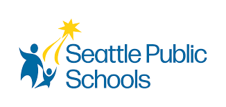
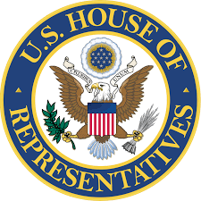
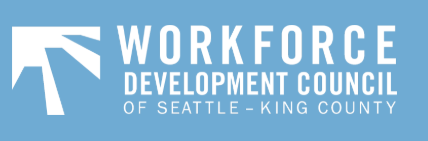
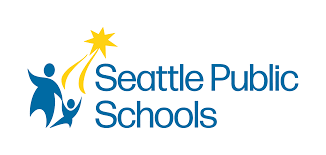
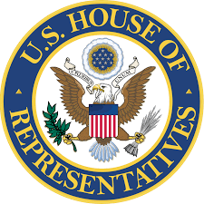
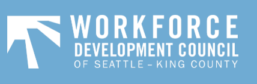
Celebrating collaborations that drive community empowerment and technological advancement.
At Americans 4 Equality, we know that lasting change isn’t built in isolation—it’s built in partnership.
We are a mission-driven nonprofit committed to closing the opportunity gap for underserved communities. Our programs provide free, industry-aligned training in technology and digital skills. Through community-based initiatives and workforce readiness support, we empower underrepresented talent—including people of color, women of all ancestries, and individuals from under-resourced backgrounds—to access high-demand careers in tech.
But we can't do it alone.
We’re calling on philanthropic foundations, corporate leaders, community stakeholders, and government allies to join us in building a more inclusive digital economy—one where everyone has access to the tools, training, and opportunities to succeed.
Your support—whether through funding, co-programming, in-kind contributions, or job placement pipelines—helps us scale solutions that work. Together, we can:
If your organization is passionate about equity, education, workforce development, or the future of technology—we’d love to connect.
📩 Contact us at info@americans4equality.org
🌐 Visit us at www.americans4equality.org
Our commitment to community starts with strategic partnerships with local leaders and organizations working directly with underserved populations.
Our commitment to community starts with strategic partnerships with local leaders and organizations working directly with underserved populations.
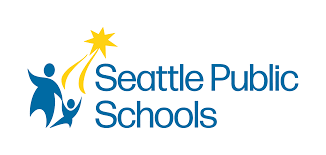
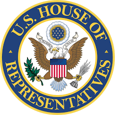
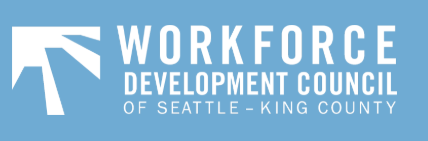
We collaborate with tech companies to bring cutting-edge tools, training, and resources into the hands of emerging talent.

 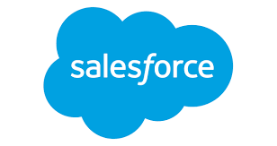
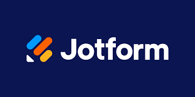
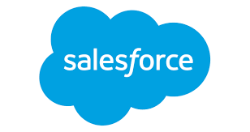
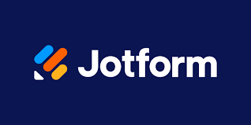
By working with non-profits, we ensure our programming is people-centered, culturally responsive, and equity-driven.
Community leaders, educators, and policymakers share their thoughts on how Americans 4 Equality is making a difference.
Congressman
Representative (D-WA 9th District)
State Representative
Washington House of Representatives
CEO
Workforce Development Council of Seattle-King County
Founder & CEO
Community Passageways
Executive
Workforce Development Council of Seattle
Superintendent
Seattle Public Schools
Bishop
Senior Pastor at Mt. Calvary Christian Center COGIC
Senior Minister
First AME Church
Commission President
Port of Seattle